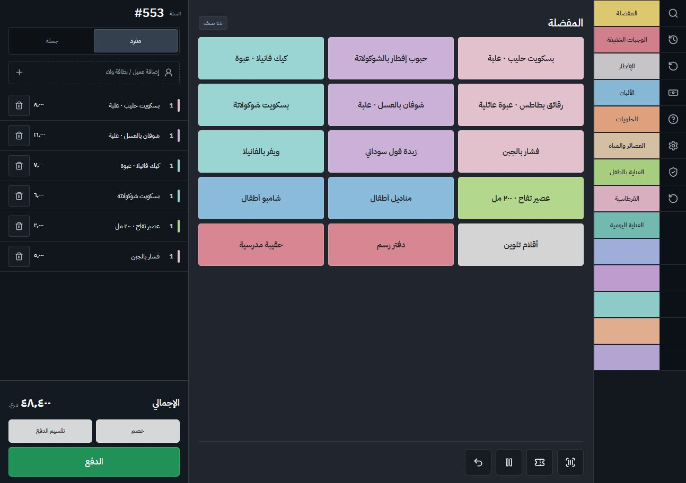
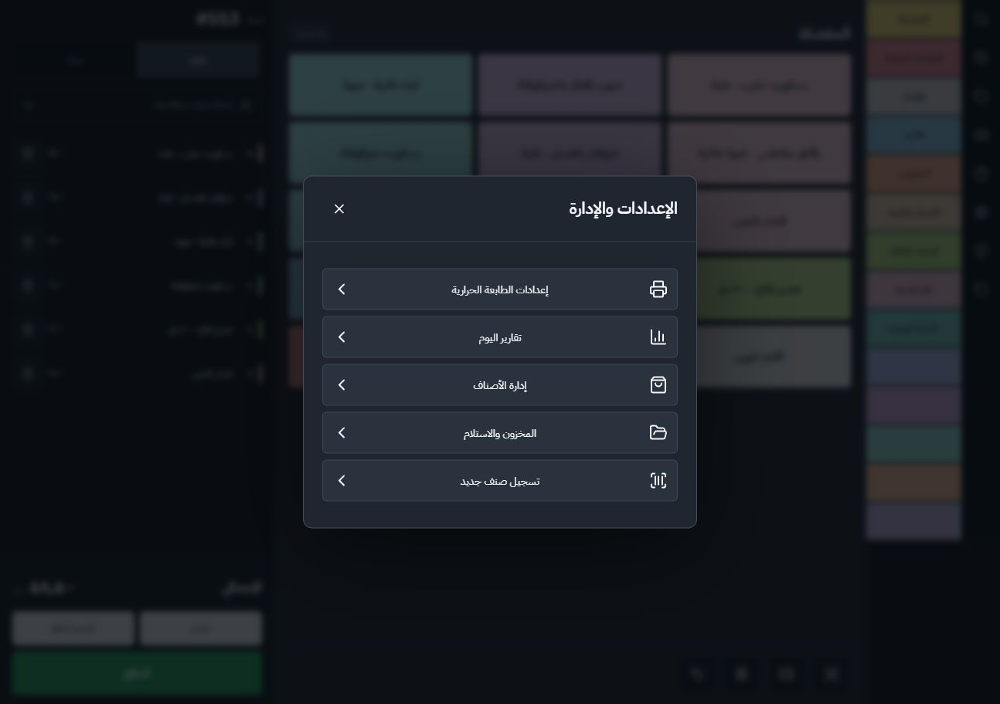
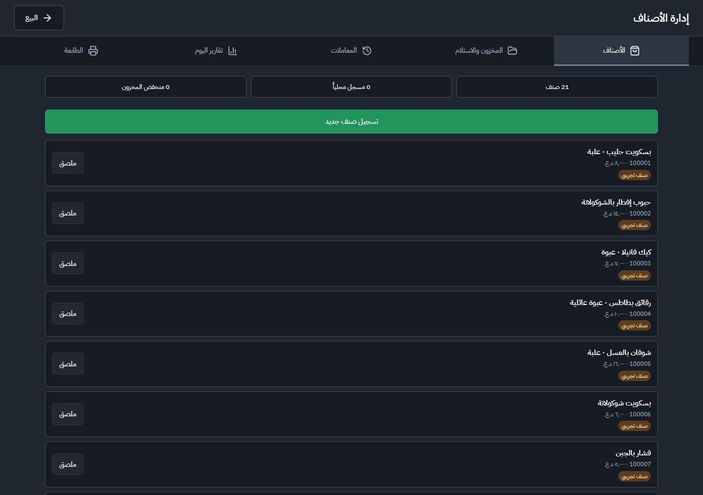
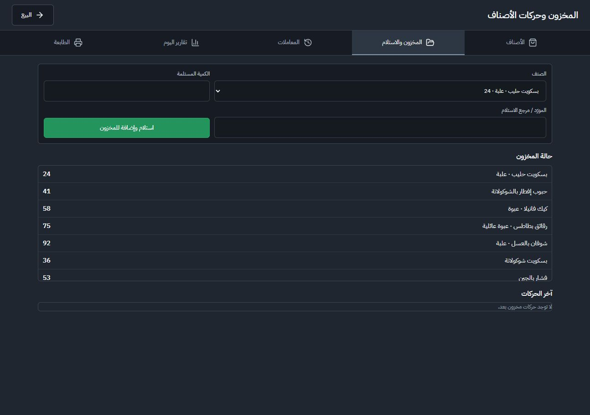
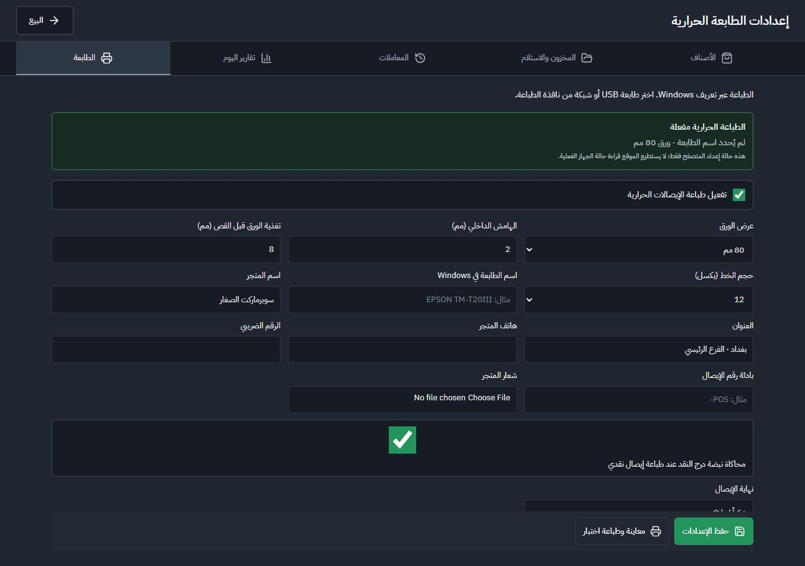
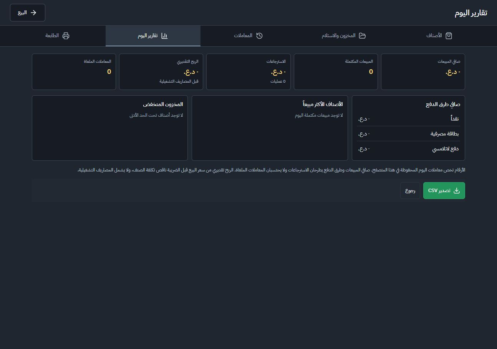
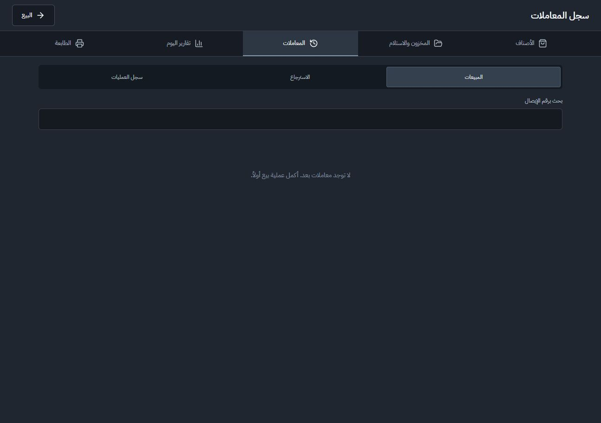
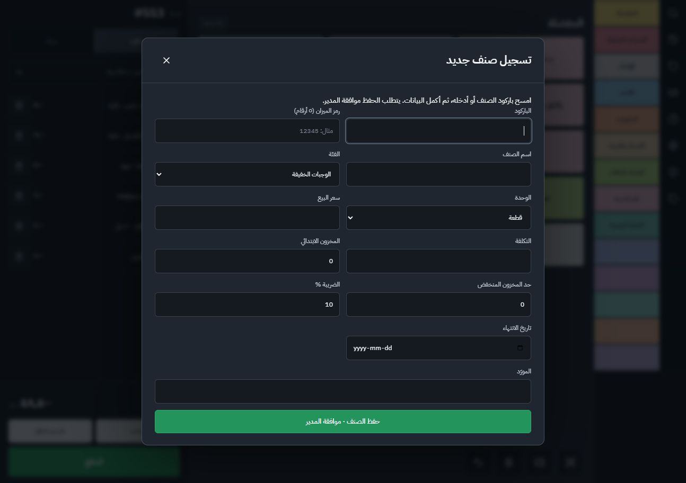

Supermarket POS: navigation and settings audit
15 September 2026 · Local running prototype · 1294 × 912 browser viewport
Verdict: The application needs clear ownership for each task and predictable exits. The current launcher, full-screen tabs, secondary tabs and replacement dialogs create an inconsistent hierarchy.
Recommended ownership
- Sale: categories, product search, basket, discounts, payments; preserve the four footer controls.
- Transactions: receipt search, sales, returns, receipt detail, reprint and authorized void/refund actions.
- Management: Products, Inventory, Reports, Audit log, Settings in a stable right-hand navigation. No preliminary launcher.
- Settings: Store details, Receipt appearance, Printer and drawer. Subsections within Settings only.
- Rail: Search, Transactions, Returns shortcut, Drawer, Printer shortcut, Management, Help; remaining cells empty. Keep the black strip at the RTL far right.
- Demo reset: protected demo-maintenance area outside everyday cashier actions.
The proposed hierarchy is a recommendation that revises the earlier five-choice management-menu rule. It has not been implemented.
1. Sale screen — mixed priorities
Keep the clear basket/pay area, three-column products, and scanner focus. Move demo reset out of the rail and put audit history in management. The similar history/reset/return arrows are hard to distinguish on touch. The fifth square is Help; the requested dedicated printer shortcut is missing.

2. Management entry — redundant layer
The five-item menu mixes configuration, operational work, reporting, and an action (New product). Its contents and order differ from the next screen’s navigation. Replace this launcher with one stable management workspace. New product belongs inside Products.

3. Products — weak findability
No product search or category/status filtering is exposed. Tall cards show only about seven products despite a large screen; label printing is the only action on built-in demo items. Use a searchable touch-sized list, a compact Add product button, and a selected-product detail view. Explain read-only demo items where relevant.

4. Inventory — three tasks competing
Receiving sits above stock status and movement history; internal scrolling hides much of the list despite empty space below. Separate Stock and Movements views; make Receive stock a focused task. Add barcode/name search and low-stock filters. Split Supplier and Delivery reference into separately labeled inputs.

5. Printer — overloaded and misleading navigation
Device configuration, receipt formatting, store identity and drawer behavior share one ungrouped form. Put hardware, receipt appearance, and store details in distinct settings sections. Fix the oversized drawer checkbox and English file picker. Keep browser-only hardware warnings. Live check: opening Printer from Settings then pressing Sale returns to Settings, contradicting its label. Code also shows printer draft state is local to the component, without a navigation guard: leaving can discard unsaved edits.

6. Reports — usable content, inconsistent exit
Summary blocks and CSV are useful. The bottom Back action returns to Settings while the top Sale action returns to selling. Use one predictable Sale exit and show the report date explicitly. Keep the saved-browser-data and estimated-profit notes.

7. Transactions — excessive unrelated navigation
Transaction history carries all five management tabs plus Sales, Returns and Audit log below. Sales and Returns are related; product and printer navigation distract from receipt lookup. Keep a standalone transaction workspace with Sales/Returns views and receipt details. Put managerial audit records in management. Empty transaction data limited deeper return-flow inspection.

8. New product — loses its parent
Opening from Products replaces the workspace with a modal over the sale screen. Closing returns to Sale, verified live. Keep the product list as the parent; save/cancel should return there. If launched by an unknown barcode during selling, return to that sale instead. Group identity, pricing and stock fields; show scale code only for applicable variable-measure units. Make required and optional fields explicit.

Priority and verification
First fix wrong return destinations and draft loss; then consolidate navigation and separate printer settings; then improve product/inventory search and touch legibility.
Accessibility risks: small low-contrast secondary text, ambiguous icon-only actions on touch, and dense ungrouped forms. Existing rail accessible names and scanner refocus are strengths. This is not a WCAG certification. Full keyboard, contrast, smaller viewport and physical 15-inch touch testing remain necessary.
No products, transactions or printer settings were saved or changed. No physical printing or payment was performed. Unit/browser regression suites were not run because this was a read-only UI diagnosis; screenshots and navigation were checked live. Code review supported draft-loss and return-path findings.